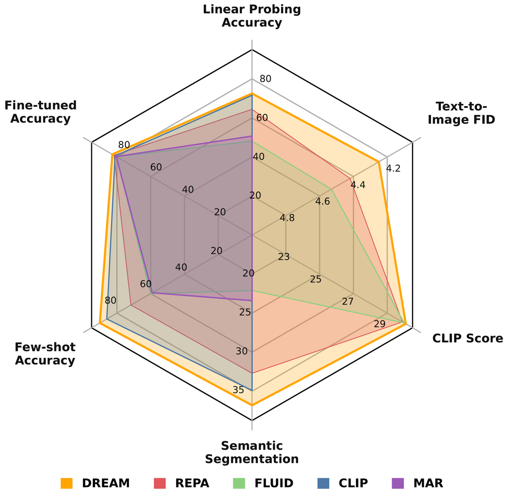
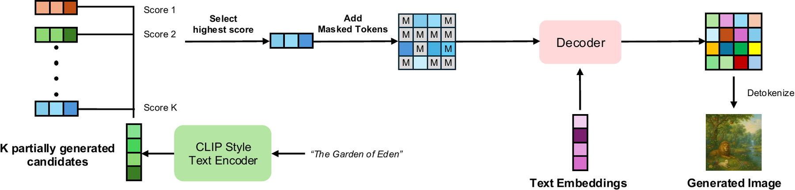
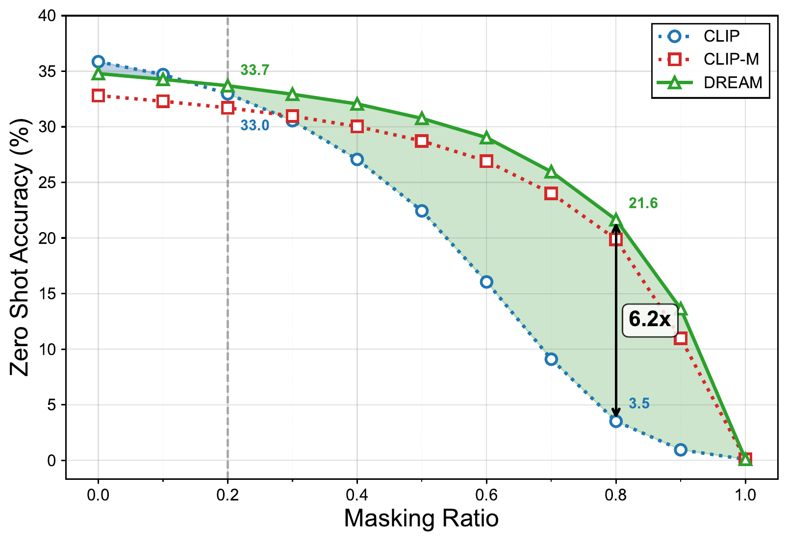
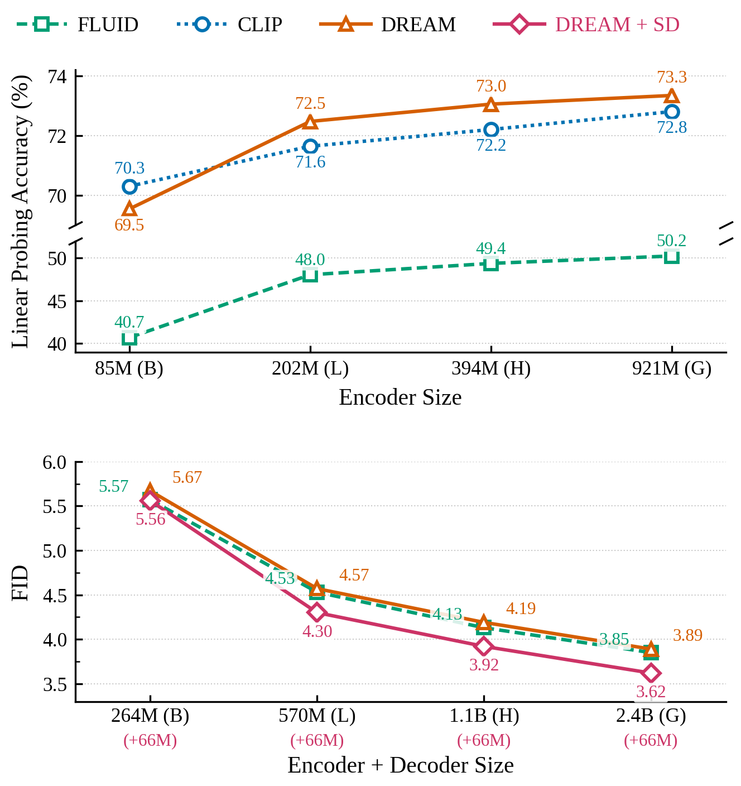
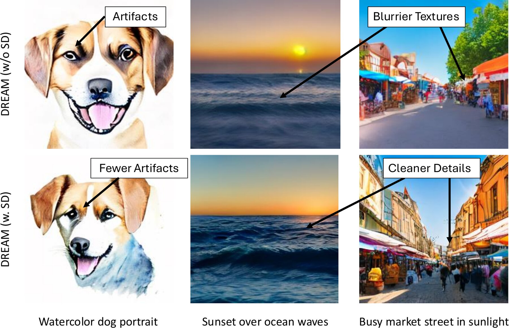
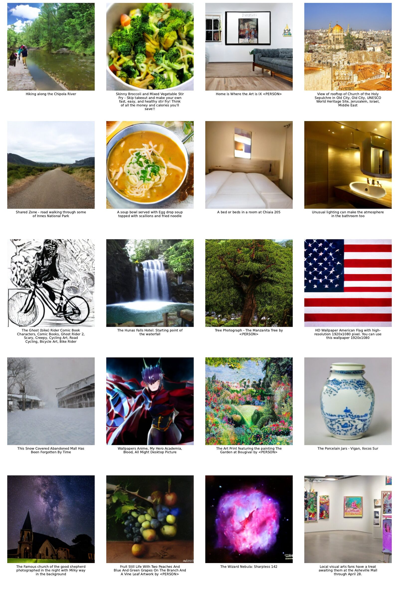
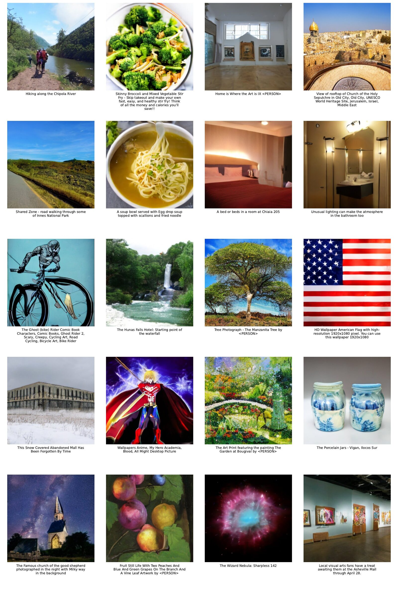
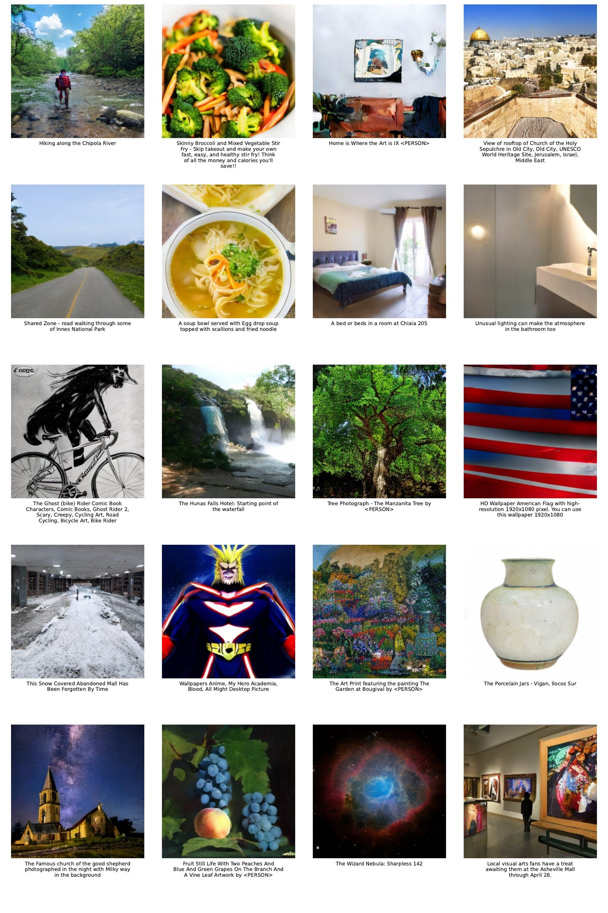

Unifying text-image contrastive learning and text-to-image (T2I) generation in a single end-to-end model is challenging because the two objectives demand opposing masking regimes: contrastive alignment needs near-complete visible tokens, while masked generative modeling needs heavy corruption. We introduce DREAM, a unified framework that resolves this conflict through Masking Warmup, a schedule that shifts the center of the masking distribution over training, so low and high masking ratios coexist at every step. This co-exposure lets a single jointly-trained encoder serve both objectives.
The resulting stable optimization unlocks Semantically Aligned Decoding at inference: the text encoder, trained against visual embeddings at all masking ratios, can score partially generated images and select the best trajectory with as little as 12.5% of the image decoded, improving both FID and throughput.
DREAM outperforms its single-objective baselines, CLIP and FLUID: on ImageNet linear-probing (+1.1%), 5-shot transfer (+4.1%), ADE20K segmentation (+1.9%), and NYU depth estimation (+6.25%) over CLIP, and on CC12M FID (+6.2%) over FLUID while maintaining CLIP Score. Together, these gains show that text-image contrastive and generative objectives, when properly unified, are synergistic rather than competing.
ImageNet linear probing over CLIP
5-shot transfer over CLIP
CC12M FID over FLUID
of the image decoded is enough to pick the best candidate

DREAM (yellow) is compared with representation models and T2I generation models trained on CC12M. A single-stage model beats all of them on every axis we measured, discriminative (linear probing, fine-tuning, few-shot, segmentation) and generative (FID, CLIP Score).
Contrastive alignment needs images with almost every token visible, but masked generative modeling needs heavy corruption. Images are encoded into continuous tokens with the Stable Diffusion VAE, then randomly masked and dropped. Masking Warmup gradually shifts the center of the masking-ratio distribution over training, so the encoder always sees both low and high masking ratios. The vision encoder is trained contrastively with text. The decoder conditions on T5 text embeddings to predict the masked tokens with a diffusion loss. Text conditioning enters only in the decoder, so the encoder cannot take a text shortcut when learning visual representations.

The model starts K candidate generations in parallel and partially decodes each one to an intermediate step. The jointly trained encoder scores each candidate by comparing its visual embedding with the prompt embedding. Only the top-scoring candidate is fully decoded. External CLIP rerankers are trained only on fully visible images, so they have to wait for complete images. DREAM can pick a candidate with as little as 12.5% of the image generated.

Zero-shot accuracy of CLIP, CLIP with masking warmup (CLIP-M), and DREAM across masking ratios. DREAM beats CLIP at the masking levels shaded in green.

DREAM at different model sizes (B/L/H/G). Top: ImageNet linear probing. Bottom: CC12M FID.

Images generated by DREAM with and without Semantically Aligned Decoding (SD).



Generated from CC12M captions with CFG = 5.0.
@inproceedings{li2026dream,
title = {Unifying Contrastive and Generative Objectives for Visual Understanding and Text-to-Image Generation},
author = {Li, Chao and Li, Tianhong and Nuthalapati, Sai Vidyaranya and Chen, Hong-You and Shukla, Satya Narayan and Cheng, Jianpeng and Yang, Yonghuan and Xiao, Jun and Fan, Xiangjun and Singh, Aashu and Katabi, Dina and Mishra, Shlok Kumar},
booktitle = {Advances in Neural Information Processing Systems (NeurIPS)},
year = {2026}
}